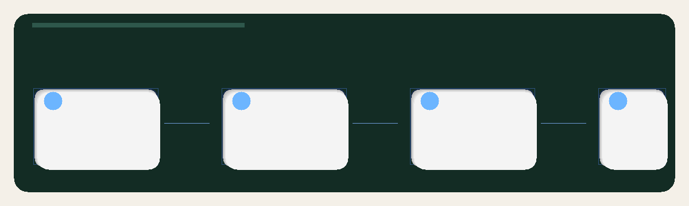

pySTAMPS is layered by orchestration, stage execution, and I/O.
The architecture is easiest to understand if you separate control flow from numerical work. The CLI decides intent, the pipeline decides stage scheduling, and the ported stage functions perform scientific transformations.
Core layers
CLI layer
pystamps.cli parses commands and builds the execution context.
Scheduling layer
pystamps.pipeline.stages chooses the stage range, checks existing artifacts, and records results.
Stage layer
pystamps.pipeline.ported contains the concrete stage implementations and many stage-specific helpers.
Support layer
pystamps.io, pystamps.runtime, and pystamps.kernels provide the shared infrastructure.
Workflow graph (Figma)
This diagram focuses on the command flow around status and run. It is exported from the linked Figma draft as the PNG used below, with zoom controls so you can inspect the full layout.
Open the source graph in Figma
Folder structure
| Path | Purpose |
|---|---|
pystamps/cli.py | Command-line interface and dispatch |
pystamps/config.py | Typed runtime, tolerance, and compatibility configuration |
pystamps/pipeline/ | Pipeline orchestration, typed results, and stage implementations |
pystamps/io/ | Dataset discovery and MATLAB file I/O helpers |
pystamps/runtime/ | Hybrid thread/process execution primitives |
pystamps/kernels/ | Kernel registry and CPU/GPU dispatch |
Data flow
- The CLI receives a command such as run or status.
- A RunConfig is loaded, and a PipelineContext is created for pipeline work.
- The dataset root is discovered into patch directories and merged-stage artifacts.
- Selected stages either reuse existing outputs or execute the ported implementation.
- Pipeline reports are recorded so downstream checks can validate outputs from this run.
Design decisions that matter in practice
- Stage ranges are explicit: you can isolate late stages when debugging or benchmarking.
- Execution is hybrid: the runtime can use threads for I/O-heavy work and processes for CPU-heavy work.
- Compatibility is configurable: strict reference replay can copy known-good artifacts into a run tree before stage execution.
- Output checks are separated: use Verification for comparison commands and parity audits.